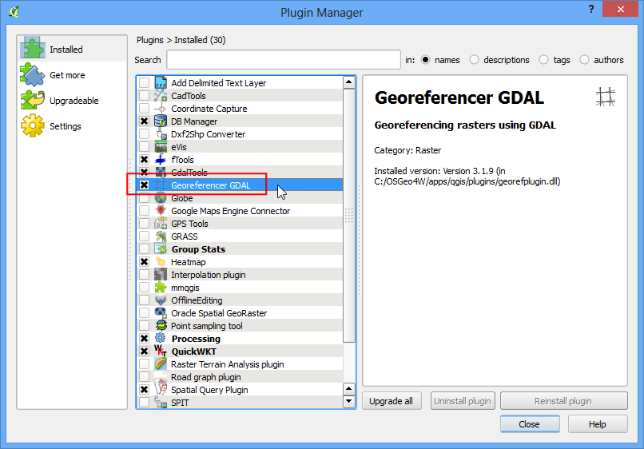
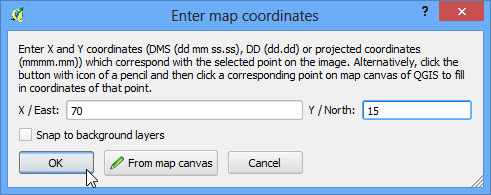
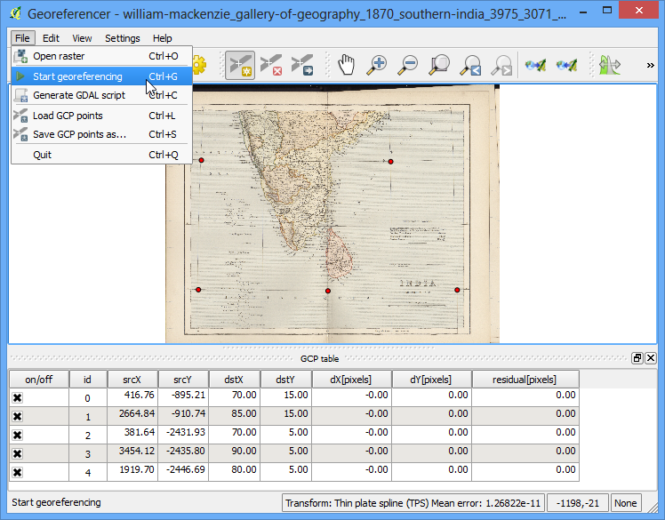
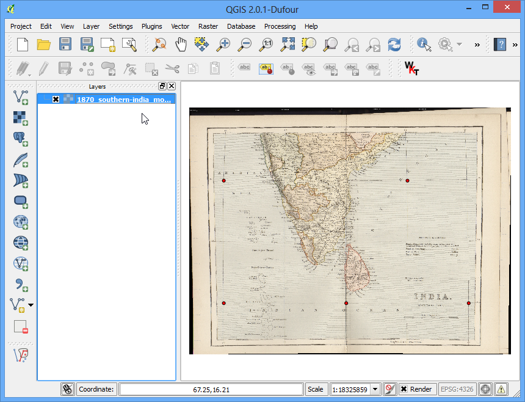
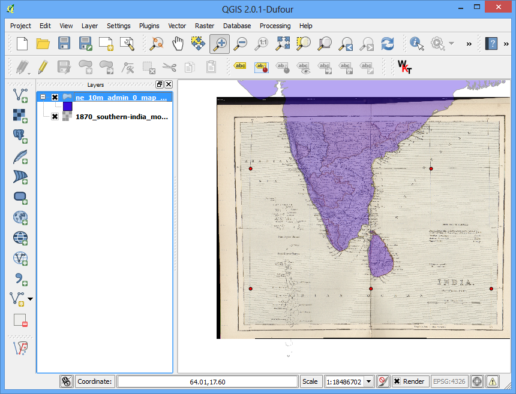

為紙本地圖進行空間對位
[ Download PDF
A4
Letter ]
大部分的 GIS 專案都會需要對某些影像進行「 空間對位 （Georeferencing） 」，也就是說要為影像的每個像素指定它在世界上的地理空間座標。在許多的情況下，這些座標是透過野外調查收集而來，例如說用 GPS 裝置定位那些易於辨識的地標。但有的時候，例如說如果你要使用的是某地圖的數位化掃描檔，你也可以藉由地圖上的一些標記來蒐集空間座標。一旦我們有了這些採樣的座標點或地面控制點 (Ground Control Points)，這些影像就可以用給定的座標系統來投影繪製。在本章節中，我們會討論相關的概念、作法與 QGIS 提供的工具，以達成高準確度空間對位的目標。
內容說明
我們要為一份 1870 年的南印地圖掃描檔，以 QGIS 進行空間對位。
操作流程
1.Georeferencing in QGIS is done via the ‘Georeferencer GDAL’ plugin. This is a
core plugin - meaning it is already part of your QGIS installation. You just
need to enable it. Go to and enable the Georeferencer GDAL plugin in the
Installed tab. See 使用附加元件 for more details on how to
work with plugins.

附加元件會放到「影像」的選單內，因此要到 開啟它。

此附加元件視窗有上下 2 個部分，上半部是影像顯示區，下半部則會以表格方式呈現所有的地面控制點。

現在就來開啟我們的 JPG 影像。選擇 ，然後找到剛才下載的地圖掃描檔，按下 開啟舊檔。

接下來，程式會要你選擇參考座標系統 (CRS)，以指定控制點的投影法和大地座標系統。如果你的控制點是透過 GPS 收集的，可以選 WGS84 座標系統；而在本例的情況下，控制點要直接在地圖掃描檔上取得，所以我們要先看一下地圖的文字敘述。本地圖的座標是經緯度，不過並沒有標示任何的大地座標系統資訊，所以我們得自己假設一個才行。因為此地圖是年代久遠的印度地圖，我們可以猜測它是使用 Everest 1830 大地座標系統，這應該會有不錯的結果。

現在影像已經被載到螢幕上半部了。

可以使用工具列的放大/平移功能觀察一下地圖的細節。

現在我們要為圖上的某些點指定座標了。仔細觀察後，可以發現本地圖具有標示經緯度的格線，所以我們可以確定在格線交叉點的 X 和 Y 座標。接著按下工具列上的 Add Point 鈕。

在跳出的視窗中輸入此點的座標，記得 X 是經度，Y 是緯度。完成後按下 確定。

這下子，下半部的地面控制點表格會新增一欄你剛剛選的地面控制點。

使用相同的操作方法，為整張圖加入至少 4 個地面控制點。控制點越多，影像可以越精確的對齊地理空間座標。

當你收集到足夠多的點後，按下 。

在 影像轉換設定 視窗中，Transformation type 選擇 薄板曲線法（Thin plate spline）。輸出影像命名為 1870_southern_india_modified.tif 。Target SRS 可選擇 EPSG:4326 ，這樣一來產生的影像就會投影在此廣泛使用的大地座標系統上。確認 處理完畢後載入QGIS中 是否以勾選，最後按下 確定。

回到 空間對位 的視窗中，點選 ，程式就會開始使用控制點轉換影像，投影到新的座標系統上。

處理程式結束後，已經過空間對位修正的圖層會被載入到 QGIS 中。

空間對位的操作到此完成。如同以往，讓我們好好檢查一下本操作是否準確。請試著從可信的來源（例如 Natural Earth 資料庫）尋找並讀取含有國家邊界的 shapefile，然後跟我們的結果比對一下。你可以看到，他們基本上對應得相當良好，不過仍然有一點小誤差。如要減少這些誤差，可以增加更多控制點、修改空間對位的參數，或是換另一個猜測的大地座標系統來試試。

{kind=link}
{kind=link}